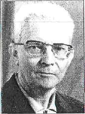

Шапошников Иван Григорьевич
С сайта (2008 Жилой Дом Ученых в Перми)

Иван Григорьевич - выдающийся ученый, доктор физико-математических наук, профессор, заведовал кафедрой теоретической физики ПГУ с 1948 по 1989 год.Иван Григорьевич родился 25 июня 1911 года в Воронежской области в семье учителя. В 1934г. окончил Дальневосточный университет и с 1934 по 1937 год обучался в аспирантуре Московского университета. До 1939 работал заведующим кафедрой теоретической физики Казанского университета, откуда был призван в армию. Участвовал в Великой Отечественной войне, был одним из организаторов партизанского подполья г.Николаева. После войны Иван Григорьевич до1948 года работал в Казанском университете, а в 1948 году был приглашен в Пермский университет для организации кафедры теоретической физики, в должности заведующего которой проработал 40 лет, с 1989 года оставался профессором этой кафедры.